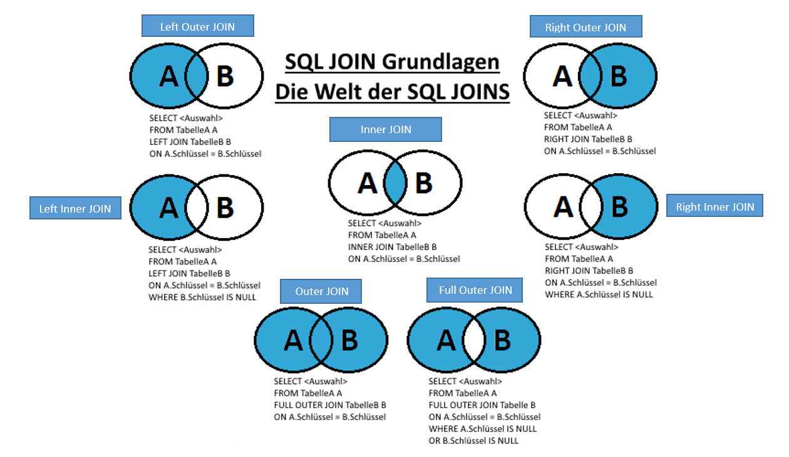

Einführung
SQL ist eine Datenbanksprache zur Definition von Datenstrukturen in relationalen Datenbanken sowie zum Bearbeiten (Einfügen, Verändern, Löschen) und Abfragen von darauf basierenden Datenbeständen. SQL steht für Structured Query Language.
Für unsere praktischen Anwendungen benutzen wir Elementary OS. Dies ist ein Linux-System. SQL kann auf jedem Linux-System arbeiten.
Relationale Datenbanken
Eine relationale Datenbank dient zur elektronischen Datenverwaltung in Computersystemen. Grundlage des Konzeptes relationaler Datenbanken ist die Relation. Das zugehörige Datenbankmanagementsystem ist das relationale Datenbankmanagementsystem (RDBMS).

Eine relationale Datenbank ist eine Sammlung von Tabellen. In diesen Tabellen sind Datensätze abgespeichert. Ein Datensatz muss eindeutig identifizierbar sein. Dies wird mit einem oder mehreren Schlüsseln erreicht. Ein Schlüssel darf sich nie verändern.
In einem Datensatz sind die eigentlichen Daten vorhanden. Diese Daten können dann mit dem DBMS ausgelesen und verändert werden. Ein Attribut ist einfach die Überschrift einer Spalte dieser Tabelle, wobei die Tabelle die Entität ist.
In diesem Bild erkennen Sie die Zusammenstellung von einer wirklichen Datenbank.
Daten Importieren
Daten aus einem Text-File in die Datenbank speisen, geht wie folgt:
LOAD DATA LOCAL INFILE 'Pfad' INTO TABLE tblname FIELDS TERMINATED BY ';';
Daten können auch aus einer SQL-Datei importiert werden. Dies erfolgt über das Terminal.
mysql -u root -p test < /home/m105/Downloads/w1.sql
In diesem Beispiel ist 'test' die Datenbank, die schon besteht, '/home/m105/Downloads/' der Pfad und 'w1.sql' ist die SQL-Datei.
Sobald man diese Datei importiert, wird jeder Befehl in der Datei in MySQL umgesetzt.
Video AnleitungModellieren
Beim Modellieren entwickelt man ein Datenmodell einer Tabelle. Dies soll einen ersten Eindruck verschaffen und die Struktur der Datenbank festlegen. Sie sollten bei der Modellierung auch schon die Primary- und Foreign-Keys angeben.
Datenmodell
Das am häufigsten verwendete Datemodell ist das relationale Datenmodell. Dies wird in der Regel nur bei Datenbanksystemen angewendet.

Modellieren wird angewandt, wenn Sie noch keine Daten für eine Datenbank haben. Bei gegebenen Daten normalisiert man.
Normalisieren
Das Normalisieren beschreibt die Aufteilung von Attributen in mehrere Tabellen, wobei Redundanzen ausgemerzt werden. Diese werden miteinander verbunden. Das heisst, die Keys werden schon mal gesetzt.
Bei der Normalisierung helfen uns die Normalformen. Die Normalformen sind einzelne Schritte für die Normalisierung von einer Datenbank.
Für die einzelnen Normalformen und die dazugehörigen Begriffe verweise ich auf die Seite:Datenbanken verstehen
Data Definition Language (DDL)
CREATE TABLE Relation ( (Attribut-Definition [PRIMARY KEY])+
[, FOREIGN KEY ( Attribut+ ) REFERENCES Relation ( Attribut+ )] )
DROP TABLE Relation
ALTER TABLE Relation Alter-Definition
CREATE INDEX Index-Name ON Relation ( Attribut+ )
DROP INDEX Index-Name
CREATE VIEW Sicht [( Attribut+ )] AS SFW-Block [WITH CHECK OPTION]
DROP VIEW Sicht
Die Data Definition Language ist eine Datenbanksprache, die verwendet wird, um Datenstrukturen und verwandte Elemente zu beschreiben, zu ändern oder zu entfernen.
Hinweis: Beim Droppen wird keine Bestätigungsmeldung erscheinen. Alles was SIE Droppen wird auch gelöscht.
Für weitere Informationen zur Data Definition Language empfehle ich die Seite:Techopedia
Data Control Language (DCL)
Die Data Control Language wird für die Verwaltung Zugriffsrechten verwendet. Es gibt hauptsächlich drei Befehle für die DCL:
- Grant
- Revoke
- Deny
Die Syntax hierbei sieht dann so aus:
GRANT Operation+ ON Relation TO (PUBLIC|Benutzer) [WITH GRANT OPTION]
REVOKE Operation+ ON Relation FROM (PUBLIC|Benutzer)
Public spricht alle Personen an, wobei Operation die Berechtigung darstellt.
Folgende Privilegien können vergeben und entzogen werden: CREATE DATABASE, SELECT, INSERT, UPDATE, DELETE, EXECUTE and CREATE VIEW.
Mit Grant vergibt man Rechte, mit Revoke entzieht man Rechte und mit Deny verweigert man die Zugriffsrechte.
Mit SHOW GRANTS FOR XY können Sie die Rechte eines Benutzers anzeigen lassen.
Mit CREATE USER XY wird ein Benutzer erstellt. Ein Passwort wird noch, beim Erstellen des Users, mit IDENTIFIED BY 'Password' erstellt.
WITH GRANT OPTION berechtigt den Benutzer die Berechtigungen von anderen zu bearbeiten.
Data Manipulation Language (DML)
Mit der Data Manipulation Language können Sie Daten schreiben, lesen, ändern und löschen. Es ist die Datenverarbeitungssprache.
Folgend sehen Sie die Syntax der DML:
INSERT INTO Relation [( Attribut+ )] VALUES ( ( Konstante+ ) )+
INSERT INTO Relation [( Attribut+ )] SFW-Block
UPDATE Relation SET (Attribut-Ausdruck)+ [WHERE Where-Klausel]
MERGE INTO Relation USING Quelle ON Join-Klausel
WHEN MATCHED [BY TARGET] INSERT (Attributliste) VALUES (Ausdruckliste)
[WHEN NOT MATCHED BY SOURCE DELETE]
DELETE FROM Relation [WHERE Where-Klausel]
TRUNCATE Relation
Mit Insert können Sie Datensätze in eine Tabelle einfügen. Mit Update überschreiben Sie vorhandene Daten. Delete löscht Daten aus einer Relation. Mit Where gibt man an, welche Daten man löschen will. Ohne das Where werden alle Zeilen aus einer Tabelle entfernt.
Sie können auch Daten aus einer anderen Tabelle einfügen.
INSERT INTO table_a (col1a, col2a, col3a, …)
SELECT col1b, col2b, col3b, …
FROM table_b
WHERE table_b.col1 = x;
Data Query Language (DQL)
Diese Sprache befasst sich mit Abfragen. DQL besteht hauptsächlich aus Select-Befehlen
Abfragen werden dann mit Select geschrieben, aber um Daten aus mehreren Tabellen abzufragen benutzt man JOINs. Diese werden weiter im Kapitel 'JOINs' erklärt.
SELECT
[rechenoperation|funktionsauswahl]
spaltenname
FROM tabelle
[WHERE bedinungen]
[GROUP BY spalten]
[HAVING aggregatfunktionen]
[ORDER BY spalte [ASC] [DESC]
[LIMIT [Anfang][Zeilenanzahl]]
Datentypen
Es gibt verschiedene Datentypen, um anzugeben, welche Daten man verwendet.
Damit Sie leichter entscheiden können, welchen Datentyp ich für was nehme, gibt es hier eine Übersicht:Datentypen-Modell
Hier eine Liste mit den verschiedenen Datentypen. Diese Angaben stimmen nur mit mysql überein:
Datentypen für Text
| Datentyp | Beschreibung |
|---|---|
| CHAR(grösse) | Kann einen String mit fester Länge beinhalten (Buchstaben, Nummern und spezielle Zeichen) |
| VARCHAR(grösse) | Kann einen String mit variabler Länge beinhalten (Buchstaben, Nummern und spezielle Zeichen).
Man kann bis zu 255 Zeichen angeben, wenn es mehr sind, dann wird der Datentyp zu TEXT umgewandelt. |
| TINYTEXT | Für einen String mit maximal 255 Zeichen |
| TEXT | Für einen String mit maximal 65'535 Zeichen |
| BLOB | Binary Large Objects. Für bis zu 65'535 bytes Daten |
| MEDIUMTEXT | Für einen String mit maximal 16'777'215 Zeichen |
| MEDIUMBLOB | Binary Large Objects. Für bis zu 16'777'215 bytes Daten |
| LONGTEXT | Für einen String mit maximal 4'294'967'295 Zeichen |
| LONGBLOB | Binary Large Objects. Für bis zu 4'294'967'295 bytes Daten |
| ENUM | Lässt Sie eine Liste von möglichen Werten eingeben. Man kann bis zu 65'535 Werte in einer ENUM-Liste eingeben.
Wenn ein Wert eingegeben wird, der nicht in der Liste ist, wird ein leerer Wert eingegeben. |
CHAR und VARCHAR unterscheiden sich ein wenig. CHAR wird immer die Grösse brauchen, die Sie angeben. Das heisst, dass z.B. bei 8 Zeichen auch immer 8 gespeichert werden, auch wenn man nur 2 oder 4 braucht. VARCHAR hingegen speichert nur so viele Zeichen, wie gebraucht werden. Es braucht hingegen immer 2 Bytes um anzugeben, wie lange der String sein darf.
Datentypen für Nummern
| Datentyp | Beschreibung |
|---|---|
| TINYINT(grösse) | -128 bis 127. 0 bis 255 UNSIGNED. |
| SMALLINT(grösse) | -32'768 bis 32'767. 0 bis 65'535 UNSIGNED. |
| MEDIUMINT(grösse) | -8'388608 bis 8'388'607 UNSIGNED. |
| INT(grösse) | 2'147'483'648 bis 2'147'583'647. 0 bis 4'294'967'295 UNSIGNED. |
| BIGINT(grösse) | -9'223'372'036'854'775'808 bis 9'223'372'036'854'775'807. 0 bis 18'446'744'073'709'551'615 UNSIGNED. |
| FLOAT(grösse, d) | Eine kleine Zahl mit Fliesskomma. Die maximale Anzahl an Ziffern rechts vom Komma wird mit d angegeben. |
| DOUBLE(grösse, d) | Eine grosse Zahl mit Fliesskomma. Die maximale Anzahl an Ziffern rechts vom Komma wird mit d angegeben. |
| DECIMAL(grösse, d) | Ein DOUBLE gelagert als String, erlaubt ein fixes Fliesskomma. Die maximale Anzahl an Ziffern rechts vom Komma wird mit d angegeben. |
Datentypen für Datumsangaben
| Datentyp | Beschreibung |
|---|---|
| DATE() | Ein Datum mit dem Format: YYYY-MM-DD |
| DATETIME() | Kombination von Datum und Zeit mit dem Format: YYYY-MM-DD HH:MI:SS |
| TIMESTAMP() | Ein Zeitstempel mit dem Format: YYYY-MM-DD HH:MI:SS. Geht bis zu 2038 |
| TIME() | Eine Zeit mit dem Format: HH:MI:SS |
| YEAR() | Ein Jahr im zwei-stelligen oder vier-stelligen Format |
Funktionen / Operatoren
Mittels SQL-Funktionen können Werte in einer Spalte berechnet werden oder sie können im Nachhinein manipuliert werden.
Es gibt zwei Arten von SQL-Funktionen: Aggregat- und Skalar-Funktionen.
Beschreibung Funktionen
Mit SQL Aggregat Funktionen, wie z.B. SUM() oder AVG(), können Tabellenspalten auf ihre Werte zusammengefasst und berechnet werden.
Mit SQL Skalar Funktionen, wie z.B. LEN() oder Round(), liefern Einzelwerte auf Basis ihrer Inputvariable zurück.
Für die einzelnen SQL-Funktionen verweise ich auf:SQL Funktionen Übersicht
Hier geht es zu den Date-Functions:Datumsfunktionen
Beschreibung Operatoren
Operatoren dienen der Verfeinerung von Ergebnissen:
Arithmetische Operatoren
| Operator | Beschreibung |
|---|---|
| + | Addieren |
| - | Subtrahieren |
| * | Multiplizieren |
| / | Dividieren |
| % | Modulo (Division mit Rest) |
Vergleichs-Operatoren
| Operator | Beschreibung |
|---|---|
| = | Ist gleich (Gleichsetzung) |
| > | Grösser als... |
| < | Kleiner als... |
| >= | Grösser als... oder gleich wie... |
| <= | Kleiner als... oder gleich wie... |
| <> | Ist nicht gleich wie... |
Logische Operatoren
| Operator | Beschreibung |
|---|---|
| ALL | WAHR, wenn alle Werte die Bedingung erfüllen |
| AND | WAHR, wenn alle Bedinungen wahr sind |
| ANY | WAHR, wenn ein Wert die Bedingung erfüllt |
| BETWEEN | WAHR, wenn die Werte im angegebenen Bereich liegen |
| EXISTS | WAHR, wenn ein oder mehrere Werte zurückgegeben werden |
| IN | WAHR, wenn alle Werte im Bereich der Bedinungen sind |
| LIKE | WAHR, wenn die Werte dem Muster entsprechen |
| NOT | Zeigt Werte an, wenn die Bedinung nicht getroffen wurde |
| OR | WAHR, wenn eine Bedinung zutrifft |
| SOME | WAHR, wenn ein Wert die Bedinung erfüllt |
Mit den arithmetischen Operatoren lassen sich einfache Berechnungen durchführen.
Die logischen und comparison Operatoren werden am meisten genutzt.
Ein Beispiel:
SELECT * FROM Products
WHERE Price = 18
Hierbei wird * nicht als Multiplikation genutzt, sondern als Asterisk. Dies ist ein Platzhalter für "Alles"
JOINs
Um JOINs anzuwenden empfehle ich die Seite:W3Schools
Mit einem JOIN lassen sich mehrere Werte aus verschiedenen Tabellen abfragen. Diese werden dann in einer Tabelle angezeigt, diese wird aber nicht erzeugt und/oder abgespeichert.
Folgend sehen Sie die unterschiedlichen JOIN-Typen:
Inner JOIN
Am häufigsten wird der Inner JOIN gebraucht. Dieser JOIN ist perfekt, um schnell die wichtigsten Informationen zu filtern. Er hebt sich durch minimale Ergebnismenge ab.
Die Syntax für einen Inner JOIN ist wie folgt aufgebaut:
SELECT Attribut FROM Tabelle1 JOIN Tabelle2 ON Tabelle1.PK = Tabelle2.FK
Left/Right Outer JOIN
SELECT Attribut FROM Tabelle1 LEFT JOIN Tabelle2 ON Tabelle1.PK = Tabelle2.FK
Left/Right Inner JOIN
SELECT Attribut FROM Tabelle1 LEFT JOIN Tabelle2 ON Tabelle1.PK = Tabelle2.FK Where Tabelle2.PK IS NULL
Full Outer JOIN
SELECT Attribut FROM Tabelle1 LEFT JOIN Tabelle2 ON ... Tabelle1.PK = Tabelle2.FK UNION SELECT Attribut FROM Tabelle1 RIGHT JOIN Tabelle2 ON ... Tabelle1.PK = Tabelle2.FK
Transaktionen
Mit Transactions kann man sich einen "Savepoint" erstellen. Wenn man einen Fehler macht und dies gern rückgängig machen möchte, sind die Transactions sehr hilfreich.
Mit folgenden Befehlen kann man Transactions starten und zu einem Savepoint zurückschalten:
START TRANSACTION TransactionName
ROLLBACK TO TransactionName
Alle Änderungen, die nach dem Starten der Transaction vollzogen wurden, sind nach dem Rollback nicht mehr vorhanden.
Wenn man eine Transaction nicht mehr braucht und diese schliessen will, geht das wie folgt:
COMMIT TransactionName
Views
Views sind virtuelle Tabellen. Diese Views sind Tabellen für Zwischenresultate oder eine einfache Übersicht aus mehreren Tabellen und werden mit SELECT oder CREATE VIEW generiert.
Sie lassen sich zudem abspeichern und wieder hervorrufen.
CREATE VIEW SoftwareVerkaeufe AS
SELECT v.kaeufer, v.verkaeufer
FROM produkte p, verkaeufe v
WHERE p.produkt_id = v.produkt_id
AND p.produkt = "Software"
SELECT SoftwareVerkaeufe AS
SELECT v.kaeufer, v.verkaeufer
FROM produkte p, verkaeufe v
WHERE p.produkt_id = v.produkt_id
AND p.produkt = "Software"
Für weitere Theorie zu Views, ist folgende Seite praktisch:SQL Views
Praktische Beispiele
Wichtige Links
Glossar
| Name/Bezeichnung | Beschreibung |
|---|---|
| SQL | SQL ist eine Datenbanksprache zur Definition von Datenstrukturen in relationalen Datenbanken sowie zum Bearbeiten (Einfügen, Verändern, Löschen) und Abfragen von darauf basierenden Datenbeständen. |
| Relation | Beziehung (Hier zwischen Tabellen) |
| Attribut | Spaltenüberschrift |
| Entität | Tabelle |
| Datensatz | Zeile einer Tabelle mit einem Satz aus Daten |
| Normalisieren | Redundanzen entfernen aus einer Tabelle mit mehreren gleichen Einträgen |
| DDL | Data Definition Language |
| DCL | Data Control Language |
| DML | Data Manipulation Language |
| DQL | Data Query Language |
| Redundanz | Mehrfache Nennung derselben Information |